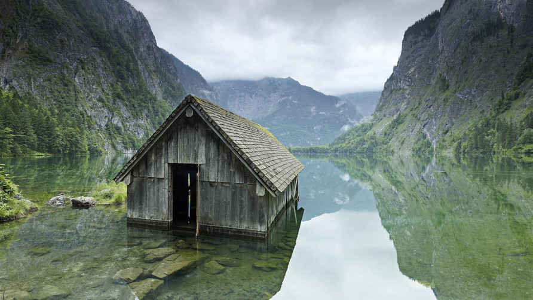
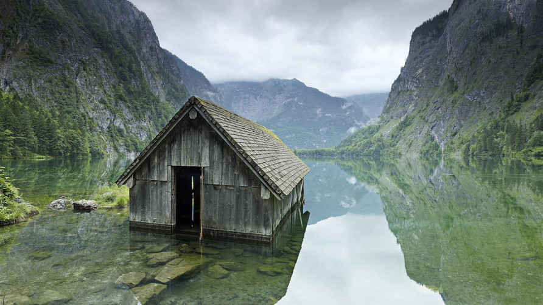

记录光与影的世界
归根到底，摄影和其他艺术形式一样，是个人的一种表达。每个人眼中的世界都是他或她个人的世界
关于黑白摄影
被摄物需有好的质地才能拍出好的黑白照。质地，或者说做成某件东西的材料，是可以用来增强灰梯尺的效用。 某些质地，像自然材质，被“黑白化”后产生相当好的效果。黑白摄影就是捕捉那一瞬间生动人心的感受。所以，如果你选的被摄物有着天然的动人质地，那么你就可以选择黑白摄影了。有些材料如木质或坚硬的金属，或者一些重复的图案，如波纹和螺旋，用黑白摄影会得到不错的效果。 在黑白摄影时，试着去找找被摄物的对称性。这类特征容易被复杂的颜色所掩盖。这时采用黑白摄影，能重新突出这种特征，拍出令人印象深刻的作品。而且对称性所具有的美感往往会被人们忽略。黑白摄影正好能抓住这个特征，让人们看到它的美丽之处...
如何掌握黑白摄影技巧
如何掌握黑白摄影技巧？因为黑白照片没有色彩的区分，摄影作品中的多种元素很难脱颖而出。因此，摄影师必须加倍注意用光，纹理和构图等基本框架。首先，利用光线和阴影来强调黑白摄影作品的主题，这既是考验拍摄者的实力，也是黑白摄影的弱点。在足够的光线条件下，照片或许是完美的，然而，错误的光线会导致成像过暗或拍摄失败。由于光线直接影响作品的成像效果，两个相同主题的照片可以在一天的不同时间去拍摄。 体现黑白摄影最大魅力的地方，莫过于拍摄人物造型。通过细微的层次调整，可使平时肉眼无法注意到的地方得到强化，让肌肤上的每条纹理都清晰可见。
你的城市是什么色彩
伴随着城市的飞速发展，今天的中国，越来越多的人进入城市，拥抱新的家园。与此同时，愈演愈烈的城市色彩乱象和“千城一面”的单调沉闷，却也在损害着中国城市的美与竞争力，进而影响到每一个人的生活。中国“城色”将走向何方？“诗意地栖居”会是一个难以实现的梦吗？ 在我的记忆中,武汉是一道卓越的风景。在这个我曾多次造访，却总能感受到其新鲜魅力的城市，云卷云舒的天空下，灰色屋顶和深浅米色系的建筑营造了挥之不去的美和优雅，有让人安静下来的力量。有人曾将雨雾蒙蒙中的武汉比喻为一位“流泪的优雅美人”，真是十分贴切..